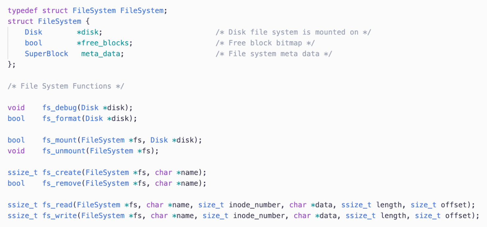

<html>
    <head>
        <link type="text/css" rel="stylesheet" href="fs.css">
    </head>

</html>

<a id = "arrow" href ="../../projects.html"><h2>&#8592;</h2></a>
<h1 id = "title">A Simple File System</h1>


<body>
    <h1 class = "head">What is a File System?</h1>
        <div id = "overviewdiv">
            <p>
                A file system is a data structure used by the operating system to store, retrieve, and organize data on a hard disk or other storage device by invoking the disk's internal functions. The goal of a file system is to provide an abstraction between the user and their stored data. Moreover, users can create files, directories, and specify file details without directly invoking disk functions. Then, when a user or user application invokes the file system interface, the file system will begin to access the data blocks of the disk to which it is mounted through using the core file system structures such as inodes and blocks.
                <br><br>In this project I endeavored to implement a very simple file system using C. It seeks to highlight the primary data structures and access structures used by the file system. My file system is a disk-based file system and uses a disk image file to simulate how the file system would interact with true hardware.
                <br><br>Source code can be found at: <a href = "https://github.com/isabellaattisano/SimpleFileSystem">github</a>
            </p>
            </img>
         </div>

     <h1 class = "head">Disk Emulator</h1>
         <div id = "diskdiv">
             <p>
                The <b>disk emulator</b> allows the filesystem to store its data as if it was a physical disk of a computer. It is actually just a single disk image file that the file system can write to as if it was actually writing onto a physical disk.

                <br><br>Has the following properites of a true disk: 
             </p>
             <ul>
                <li>Partitions the disk into 4KB blocks</li>
                <li>File system uses the block-number to read and write to the disk</li>
                <li>Only allows these operations to be done on an entire disk block</li>
            </ul>
            <p style="padding-top: 1.2em;">
                <b>Open Function:</b>
        

            </p>
            <ol>
                <li>Allocates disk structure and sets attributes </li>
                <li>Opens a file or disk for our file system to be stored on </li>
                <li>Depending on the number of blocks specified, truncates (shortens/ extends) the file into the desired size </li>
            </ol>

            <p style="padding-top: 1.2em;">
                <b>Read & Write Functions:</b>
    
            </p>
            <ol>
                <li>Only reads / writes to the one specified block number at a time  </li>
                <li>Uses the lseek() system call to move to specified block within the disk file                </li>
                <li>Uses the read() / write() system calls to access or make changes to the disk at the specific block                </li>
            </ol>
         </div>    


         <h1 class = "head">File System Disk Layout</h1>
        <div id = "overviewdiv">
            </img>
            <p>
                The first block of the disk contains the <b><u>superblock</u></b> which contains:
                <br><br>1. <i>Magic Number</i>: a sequence of bytes that identifies the file system type
                <br><br>2. Total number of <i>blocks</i> which is the same number of blocks on disk
                <br><br>  3. Only allows these operations to be done on an entire disk block
                <br><br>4. Total number of <i>inodes</i>
                
            </p>

            
        
        </div>

        <div id = "overviewdiv">
            <p style = "padding-top:4rem;">
                10% of the blocks are reserved for storing <b><u>inodes </u></b> which are essentially files represented by a number (low-level file name) and contain:
                <br><br><i>Metadeta</i>: such as size and if the inode is being used (valid)
                <br><br><i>Direct Pointers: </i> 5 pointers to blocks containing file data which are just block numbers
                <br><br><i>Indirect Pointers: </i>The block number of a block containing pointers to 128 other possible blocks 
                
            </p>

            </img>

        </div>


        <h1 class = "head">File System Interface</h1>

        <div id = "overviewdiv">

            </img>

        </div>
    

</body>